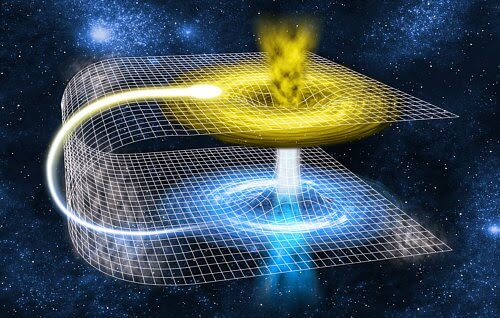
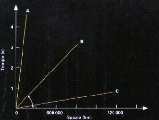

I buchi neri e i viaggi nel tempo
Le immagini che arrivano dallo spazio e dai telescopi a terra sono affascinanti per la molteplicità di forme e di colori che offrono all’osservatore. Da queste è possibile riconoscere, con un po’ di attenzione, l’infinita varietà di corpi celesti che popolano l’Universo: stelle di ogni colore e dimensione, galassie dalle caratteristiche forme a spirale e ancora, nebulose dalle forme e dai colori più diversi. Allo stesso modo in cui in un grande parco naturale siamo incuriositi dagli animali più esotici, anche in questo immenso zoo cosmico esistono degli “esemplari” che ci affascinano più di altri. Sono i corpi celesti più misteriosi e più difficili da osservare la cui natura non è ancora perfettamente conosciuta. Tra questi corpi, sicuramente, quelli che stimolano maggiormente l’immaginazione sono i buchi neri.
Il concetto di buco nero
Nel linguaggio quotidiano, “buco nero” è ormai entrato a designare una sorta di pozzo senza fondo entro il quale ogni cosa è destinata a sparire senza lasciare tracce. Ma che cosa sono veramente i buchi neri? Per capirlo bisogna fare un passo indietro di un paio di secoli. Nel XVIII secolo Simone Pierre de Laplace predisse l’esistenza di questi oggetti e ipotizzò che esistessero nell’Universo corpi dalla densità talmente elevata da avere una velocità di fuga superiore alla velocità della luce, cioè 300.000 km/s. In questo caso, neanche la luce riuscirebbe ad essere tanto veloce da sfuggire alla forza di attrazione di un simile corpo e rimarrebbe, quindi, intrappolata per sempre all’interno del suo campo gravitazionale. Poiché un corpo del genere non potrebbe emettere luce, risulterebbe completamente invisibile e potremmo immaginarcelo solo come una grande buco, nero per l’appunto.
Le moderne teorie
Nei primi anni di questo secolo, però, con la nascita e lo sviluppo della meccanica quantistica, si scoprì che la luce, che fino a quel momento si pensava essere solo un’onda elettromagnetica, in alcune circostanze si comportava anche come una particella materiale. Questo concetto, come si è detto in precedenza, venne sviluppato all’interno della teoria della Relatività Generale di Albert Einstein, pubblicata nel 1916, e ripreso poi anche dal fisico tedesco Karl Schwarzschild che pose le basi matematiche della teoria dei buchi neri. In questo contesto, si poteva giustificare l’idea che la luce fosse anche soggetta all’azione della forza di gravità. Con quasi due secoli di anticipo Laplace aveva avuto, anche se probabilmente in modo del tutto inconsapevole, una delle intuizioni più importanti della storia della fisica. Da che cosa nascono i buchi neri e come si formano? I buchi neri, il cui nome è stato coniato nel 1967 dall’astrofisico americano John Wheeler, non sono altro che il prodotto finale dell’evoluzione di stelle di grande massa, all’incirca di massa superiore alle 10 masse solari.
La formazione dei buchi neri
L’esistenza di una stella si basa su un sottile equilibrio tra la pressione verso l’esterno, esercitata dalla radiazione prodotta dalle rezioni nucleari che avvengono al suo interno, e quella verso l’interno dovuta alla sua stessa massa. Questa condizione, però, non è stabile, ma subisce col tempo vari aggiustamenti. Man mano, infatti, che si esaurisce la riserva di idrogeno si attenua anche la pressione centrifuga della radiazione e la stella va incontro ad una nuova contrazione gravitazionale. La temperatura centrale subisce, allora, un nuovo innalzamento e si innescano nuove reazioni di fusione, che utilizzano questa volta i prodotti delle reazioni precedenti. In questo modo la contrazione gravitazionale si blocca e la struttura interna della stella si riassesta. Durante la sua vita la stella attraversa più volte fasi simili, ma ogni volta, però, sono sempre più brevi. Quando la stella ha esaurito tutte le sue scorte di combustibile nucleare e non ci sono più reazioni possibili, essa va incontro all’ultima, definitiva, contrazione. Questo passo decreta in pratica, la morte della stella. A questo punto il destino della stella è determinato unicamente dalla sua massa. Se la stella ha una massa inferiore a poche masse solari, essa continua a contrarsi fino a spegnersi lentamente. Viceversa, se la massa della stella è molto grande, almeno dieci masse solari, la sua morte avviene in modo molto più spettacolare. La stella morente conclude la sua esistenza con un’enorme esplosione durante la quale emette in pochi secondi tanta energia quanta ne emetterebbe il Sole in tutta la sua vita. Un evento di questo tipo viene detto esplosione di supernova e produce immense nubi di gas in espansione che sono gli strati più esterni della stella scagliati nello spazio. La stella, però, lascia dietro di sé una traccia più labile della sua esistenza. Per l’esplosione infatti, il suo nucleo subisce quello che si dice un collasso gravitazionale completo, durante il quale tutta la massa rimasta si aggrega in una sfera dalle dimensioni estremamente compatte e dalla densità pari a 10.000 volte quella del nucleo atomico. Si tratta, infatti, di una massa pari circa ad una decina di volte quella del Sole che è concentrata in una sfera di poche centinaia di metri di diametro, più o meno le dimensioni di una città come Milano. Si è formato, così, un buco nero.
I buchi neri e la fisica fondamentale
I buchi neri rappresentano un formidabile laboratorio naturale sul quale gli scienziati possono verificare le più avanzate ipotesi di fisica teorica. Secondo la teoria della Relatività Generale formulata da Einstein, infatti, le leggi della fisica sono influenzate dal campo gravitazionale locale. In particolare, lo scorrere del tempo avverrebbe con ritmi diversi in presenza di campi gravitazionali di diversa intensità. Ad esempio, il tempo scorrerebbe più lentamente vicino ad un buco nero che non vicino al Sole. Non solo un buco nero influenzerebbe lo scorrere del tempo, ma anche lo spazio attorno ad esso avrebbe una struttura diversa. Secondo la Relatività Generale, infatti, la presenza di un forte campo gravitazionale generato da un corpo massiccio come un buco nero distorcerebbe la struttura dello spazio circostante e la sua stessa geometria sarebbe diversa. Questo vuol dire che in prossimità di un buco nero il cammino più breve per unire due punti nello spazio non è più una linea retta, ma una linea curva la cui forma è determinata dall’entità della distorsione spaziale e, quindi, dalla massa stessa del buco nero. Questo è quanto accade all’esterno, ma che cosa c’è veramente all’interno di un buco nero? Si tratta di una domanda che rimarrà per lungo tempo, forse per sempre, senza una risposta precisa. Le condizioni fisiche all’interno di un buco nero sono talmente diverse da ogni realtà riproducibile sperimentalmente da rendere ardito qualunque tipo di previsione. Per questo motivo, fioriscono molte teorie che è difficile confermare o smentire. Tra le più audaci vi è anche l’ipotesi che i buchi neri, proprio per il fatto che distorcono in maniera così sensibile lo spazio e il tempo, rappresentino una specie di “punto di passaggio” tra dimensioni diverse. In particolare, entrando in un buco nero si uscirebbe in un altro buco nero e, quindi, in un punto diverso dello spazio e, forse, anche del tempo. Qualcuno, quindi, ha la convinzione che i buchi neri possano costituire un mezzo per viaggiare nello spazio a velocità istantanee o, addirittura, per viaggiare nel tempo. Naturalmente, in questi casi è difficile stabilire un confine preciso tra la pura speculazione teorica e la fantasia. L’ipotesi più credibile in base alla fisica che conosciamo è che qualsiasi oggetto, quindi anche un eventuale astronave, che precipitasse in un buco nero verrebbe immediatamente stritolato dal suo immenso campo gravitazionale.
Dove sono i buchi neri?
Quanti buchi neri ci aspettiamo nell’Universo? Poiché le teorie dell’evoluzione stellare ci dicono che le stelle di grande massa dovrebbero essere la maggioranza, dovremmo aspettarci che i buchi neri nella nostra galassia siano piuttosto numerosi. In particolare, poiché le stelle tendono a nascere a coppie o, come si dice più tecnicamente, in sistemi binari, i buchi neri non sarebbero oggetti solitari, ma la maggior parte di loro avrebbe una stella compagna. Accanto ai buchi neri di tipo stellare, formatisi in seguito al collasso gravitazionale di stelle massicce, esiste anche una famiglia di “fratelli maggiori”. Questi buchi neri si formerebbero all’interno del nucleo di una galassia in seguito al collasso gravitazionale della materia che si accumula al suo centro nel corso di miliardi di anni. Le masse di questi buchi neri giganteschi sarebbero dell’ordine di qualche centinaio di milioni di masse solari, pari circa all’1% della massa complessiva della galassia ospite. Per questo motivo vengono chiamati Buchi Neri Supermassivi. Secondo le ultime teorie tutte le galassie, inclusa la nostra Via Lattea, avrebbero un gigantesco buco nero al loro centro e sarebbe proprio per effetto della sua azione gravitazionale che noi vediamo la maggior parte della materia luminosa concentrata nelle regioni centrali. Questo significherebbe che i buchi neri, per lungo tempo considerati dai fisici una semplice astrazione teorica o anche pura fantasia, sarebbero tra gli oggetti più comuni che popolano il nostro Universo.
I viaggi nel tempo
Nei primi lavori di elettrodinamica quantistica di Feynman, del 1946, il positrone veniva rappresentato come un elettrone viaggiante a ritroso nel tempo. L’annichilazione di un elettrone e di un positrone gli appariva come l’inversione di marcia temporale di un elettrone. Le idee di Feynman ci permettono allora di pensare a una macchina del tempo capace di trasportare un crononauta nel passato, proprio come immaginato nel 1895 dal famoso scrittore inglese H.G. Wells, con il suo famoso romanzo La macchina del tempo. Se si filma un sistema fisico e si proietta a ritroso il film ottenuto, e se nessuno ci dice che il filmato è proiettato in senso inverso, possiamo ricondurre ciò che osserviamo a qualche violazione di legge fisica a “livello microscopico”? Questa precisazione è necessaria, poiché se filmassimo la caduta e la rottura di un bicchiere di vetro e proiettassimo il film a ritroso, vedremmo una scena apparentemente impossibile, in cui i frammenti di vetro si riuniscono a formare il bicchiere, che si solleva da solo dal pavimento. Tuttavia questa impossibilità non deriva dalla violazione di leggi fisiche, ma da un processo che è irreversibile solo dal punto di vista termodinamico, e quindi lascia aperto un margine teorico di possibilità, anche se rimane estremamente improbabile. La termodinamica non si può applicare a livello microscopico, ossia in processi che coinvolgono un numero finito di particelle. Essa è la scienza che studia lo svolgersi dei fenomeni secondo il massimo della probabilità. Comunque, pur mantenendo la sua pratica validità, tale disciplina non può ritenersi fondamentale come la meccanica. Quest’ultima è simmetrica rispetto al tempo, ossia mantiene la sua validità anche se il tempo scorre alla rovescia; questo significa che ogni fenomeno meccanico può svolgersi indifferentemente in un senso o nel senso opposto.
Perché il tempo scorre solo in un verso?
Allora, da dove nasce l’irreversibilità per la quale in pratica il tempo ha una direzione univoca nel suo scorrere, o come si dice, una “freccia”? Le leggi della meccanica hanno valore fondamentale ed il tempo è reversibile. La termodinamica ha solo valore pratico e non assoluto, e assegna una freccia al tempo ma, in linea di principio, potrebbe accadere che questa non sia rispettata e un fenomeno potrebbe manifestarsi in maniera reversibile: il tempo acquisterebbe la sua reversibilità di fatto. La freccia del tempo riposa, quindi, solo nell’estrema improbabilità che la termodinamica non sia rispettata, a causa dell’enorme numero di particelle che costituiscono i sistemi pratici.
I buchi neri e lo spazio-tempo
Gli astrofisica suppongono che una stella con massa superiore a tre masse solari (fino a circa 20 – 30 volte quella del Sole), al termine del suo ciclo evolutivo, collasserà, fino a ridursi schematicamente a un punto. Nel corso del collasso, la concentrazione sempre maggiore della massa verso un punto incurverà sempre più lo spazio. All’interno di questo affossamento la stella continuerà a contrarsi sempre più rapidamente, mentre la pressione, il campo gravitazionale e la densità tenderanno a diventare infiniti, e la materia collassante tenderà a raggiungere una singolarità, cioè un punto al di fuori del nostro spazio-tempo. Il campo gravitazionale diverrà talmente intenso che neanche un raggio luminoso che partisse verticalmente dall’interno di quella zona che viene chiamata “orizzonte degli eventi”, potrebbe fuggire dal buco nero. Infatti, al posto della stella, sarà rimasta nello spazio-tempo una zona di qualche chilometro, che, non potendo inviare luce all’esterno, sarà nera. La stella sarà svanita dal nostro Universo e si sarà trasformata in un buco nero. Le stelle di grande massa potrebbero formare buchi neri con diametri compresi tra i 10 e i 150 km. Dato che secondo la relatività generale il tempo rallenta in un campo gravitazionale, esso si fermerà addirittura, sull’orizzonte degli eventi. Il buco nero ingoierà senza scampo tutta la materia nei dintorni.
I buchi bianchi
A questo punto si potrebbe pensare alla possibilità che esistano dei processi esattamente opposti a quelli dei buchi neri. In qualche punto dello spazio-tempo vi potrebbero essere delle zone dalle quali la materia non è ingoiata, ma espulsa, corpi che non collassato, ma esplodono. Una prova oggettiva di uno di questi oggetti la abbiamo sotto i nostri occhi : è niente di meno che l’intero Universo, e visto che è in espansione, se procedessimo a ritroso nel tempo, vedremmo tutte le galassie precipitarsi verso un unico punto, nel quale, 15 miliardi di anni fa, era concentrata tutta la massa dell’Universo. A quell’epoca cominciò ad esistere il nostro spazio-tempo, quindi potremmo affermare che l’Universo è un buco nero al contrario. L’astrofisico sovietico Novikov, nel 1964, pensò di spiegare l’origine dei nuclei galattici attivi, proprio con questo tipo di oggetti. Secondo questa teoria, un certo numero di “frammenti” del Big Bang non partecipò a questa immensa esplosione iniziale, e fu espulso senza esplodere. L’esplosione di questi frammenti si verificò più tardi producendo dei Big Bang in miniatura. Fu proprio l’osservazione di fenomeni esplosivi con liberazione di un’enorme quantità d’energia, quali i nuclei delle galassie ellittiche giganti, le galassie di Seyfert e le quasar, che portò Novikov a formulare la sua teoria. In altre parole, potrebbero esserci singolarità che non ingoiano materia come i buchi neri, ma la espellono. Mentre i buchi neri sono un’entrata, i buchi bianchi sono un’uscita.
I ponti di Einstein-Rosen
Nel caso di buchi neri rotanti, i teorici affermano che, anche attraversando l’orizzonte degli eventi, non necessariamente si deve cadere nella singolarità. Einstein e Rosen ritengono che una volta superato l’orizzonte degli eventi, la curvatura si fa più dolce, e si può emergere in un secondo Universo piatto come il primo, attraverso quello che viene chiamato ponte di Einstein-Rosen. In questo caso il buco nero sarebbe quindi una strada per passare da un Universo ad un altro. Lo stesso discorso si può fare ipotizzando che questo ponte colleghi non due Universi, ma due punti di uno stesso Universo, fungendo così da scorciatoia nello spazio-tempo, potremmo così raggiungere punti distantissimi nello spazio e nel tempo. La figura geometrica ipotizzata è anche chiamata “buco verme” (in inglese wormhole). Naturalmente se una delle due estremità del ponte fosse un buco nero, l’altra dovrebbe essere un buco bianco, dal quale emergerebbe la materia ingoiata da un buco nero.
I viaggi nello spazio-tempo
Il fatto che sia possibile utilizzare un buco nero, per compiere viaggi nello spazio-tempo fino ad un altro Universo, si può studiare in dettaglio tramite la soluzione delle equazioni del campo, travata da R. P. Kerr nel 1963. Per visualizzare questi risultati è necessario ricorrere al diagramma di Penrose-Carter. Tale diagramma è utile per visualizzare le condizioni dei nostri ipotetici viaggi nello spazio-tempo. Ponendo sull’asse orizzontale (ascisse) lo spazio e su quello verticale (ordinate) il tempo e scegliendo come unità di misura il tempo, il secondo, e per lo spazio la distanza percorsa dalla luce in un secondo, cioè 300.000 km, ci renderemo conto che i raggi luminosi “viaggeranno” su una retta a 45°. È evidente dal grafico che ci sono delle posizioni in cui ci si può muovere ed altre proibite. Se poniamo l’istante della partenza nell’origine del grafico, cioè a spazio e tempo uguali a zero, ci accorgiamo che ci possiamo senz’altro muovere da O al punto A, ma per andare da O a B, dovremmo percorrere ogni secondo 300.000 km, e questo può farlo solo la luce. Il viaggio da O a C è assolutamente impossibile, perché dovremmo percorrere uno spazio enorme in un tempo brevissimo, addirittura a velocità superiore a quella della luce, e ciò è impedito dalla teoria della relatività ristretta. In definitiva i percorsi permessi dallo spazio-tempo rappresentati nel grafico sono quelli compresi tra l’asse delle ordinate e la retta a 45°. Infatti, muoversi lungo l’asse delle ordinate significa far trascorrere il tempo stando fermi; muoversi lungo la retta a 45° significa viaggiare a velocità della luce, allora i casi intermedi compresi tra questi due esprimono tutti i viaggi alle varie velocità possibili. Il diagramma di Penrose-Carter esprime la soluzione di Kerr, per i viaggi in altri Universi. A prima vista tale diagramma può sembrare molto complicato, ma come vedremo non è difficile estrarne le informazioni richieste. Teniamo conto che Kerr, per la ricerca della sua soluzione, applicò i calcoli a un buco nero rotante, e trovò due orizzonti degli eventi e non uno solo. I due orizzonti degli eventi sono rappresentati dalle due rette perpendicolari che si incrociano al centro del diagramma e da quelle ad esse parallele. Come si vede, queste rette intersecandosi formano tre regioni differenti. Le regioni del tipo I sono tutte le aree tra gli Universi esterni (il nostro o altri) e il primo orizzonte degli eventi. Le regioni del tipo II sono le aree tra il primo e il secondo orizzonte degli eventi. Le regioni del tipo III sono le aree tra il secondo orizzonte degli eventi e la singolarità, che nel grafico è stata rappresentata da una linea ondulata. Una prova interessante che si ottiene da questo diagramma, è l’esistenza di una varietà di Universi differenti. La figura ne illustra solo quattro (il nostro ed altri tre), ma il diagramma va immaginato ripetersi indefinitamente in verticale. Il buco nero ruotante può dunque essere immaginato come un ponte che collega un numero infinito di Universi, che altrimenti sarebbero separati. Un’altra caratteristica evidente è la singolarità che appare bidimensionale e parallela all’asse dei tempi.
Iniziamo il viaggio nello spazio
Immaginiamo un astronauta deciso a intraprendere questo viaggio avventuroso e con scarse probabilità di ritorno. Non potendo viaggiare a velocità superiore a quella della luce, non potrà, partendo da O, andare in un altro Universo con un viaggio del tipo D. gli sono però consentiti tutti i viaggi corrispondenti alle direzioni comprese tra l’asse dei tempi e la direzione OL, che forma con questa un angolo di 45°. L’ardimentoso astronauta proverà ad esplorare un buco nero rotante con il percorso OA. In questo modo non arriverà molto vicino al buco nero, e potrà sbucare in qualche altro luogo del nostro stesso Universo. Deciso a ripetere l’esperienza, il viaggiatore ritenterà la prova con il percorso B, ma si dirigerà direttamente verso il buco nero. Passerà attraverso il primo orizzonte degli eventi, poi attraverso il secondo, ma il puntare direttamente versò la singolarità lo condanna a una fine orribile, enormi forze gravitazionali, infatti, lo stritoleranno. Se fosse stato più accorto, si sarebbe reso conto che la soluzione di Kerr prevede che si può attraversare l’orizzonte degli eventi senza necessariamente entrare in contatto con la singolarità. Un secondo astronauta, più preparato, sceglierà il percorso C, e regolando opportunamente l’accelerazione, porterà felicemente a termine l’impresa. Partendo dal nostro Universo, attraverserà dapprima l’orizzonte degli eventi esterno, transiterà nella zone tra i due orizzonti fino all’orizzonte degli eventi interno, spingendosi nella zona più prossima alla singolarità. Qui però non cadrà, taglierà in un altro punto l’orizzonte degli eventi interno, lo attraverserà ancora, emergendo nella zona tra i due orizzonti, e infine, tagliando per la seconda e ultima volta l’orizzonte degli eventi esterno, sbucherà fuori del buco nero emergendo in un altro Universo. Se lo decidesse, l’astronauta potrebbe continuare il viaggio in un terzo Universo, poi in un quarto e così via, lungo la striscia di Universi ottenuta ripetendo continuamente lo schema del diagramma Penrose-Carter.

E i viaggi nel tempo?
Non è detto che il gioco immaginato possa continuare all’infinito, poiché la striscia potrebbe non essere aperta, ma chiusa, come avverrebbe disponendo una pagina a formare un cilindro. In questo caso l’astronauta diventerebbe un crononauta, perché finirebbe per tornare nuovamente nel nostro Universo, rimbucando in un certo punto dello spazio-tempo. Potrebbe riapparire, poco dopo la sua partenza, in un posto lontanissimo, o ritornare esattamente nel luogo di partenza, ma in un altro tempo, per esempio un milione di anni dopo la sua partenza o 20.000 anni prima. Il crononauta potrebbe scegliere il luogo e l’epoca d’arrivo, semplicemente stabilendo i parametri che regolano il viaggio. Si potrebbe addirittura inviare una sonda automatica a esplorare tutti gli Universi possibili, con i quali si collega il buco nero, in modo che ritorni dopo qualche istante, dopo aver viaggiato per milioni di anni e raccolto una quantità di informazioni inimmaginabili.
Autore: Piero D'Incecco
- Caratteristiche dei buchi neri
- La ricerca dei buchi neri
- I buchi neri in sistemi binari
- I buchi neri nelle binarie X
- Lo spettro di emissione
- La ricerca di buchi neri attraverso la funzione di massa